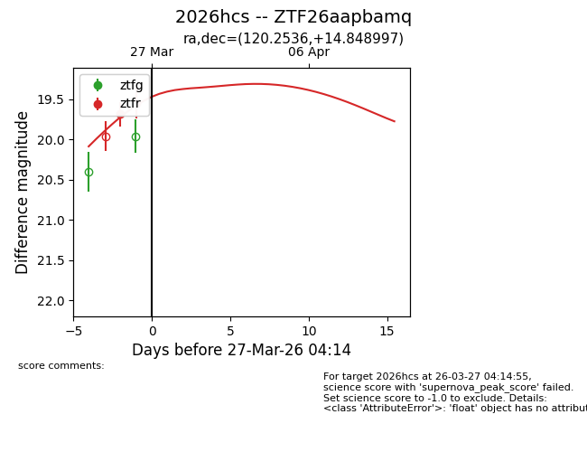
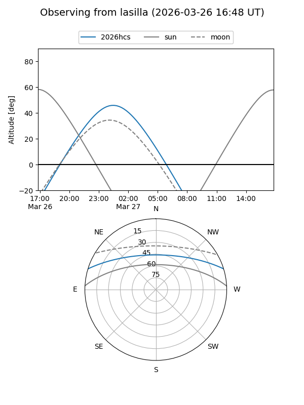
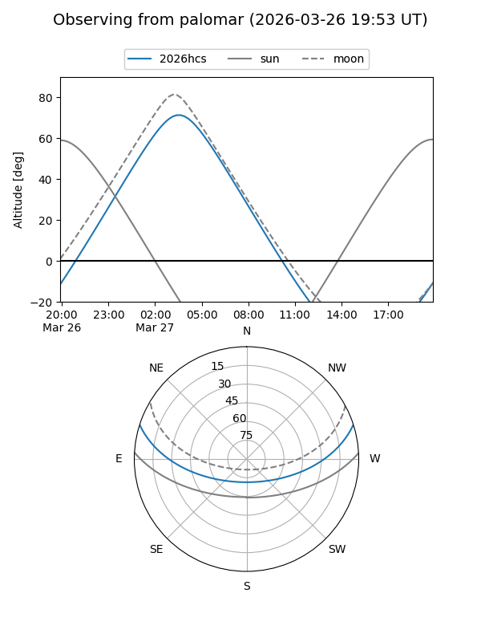
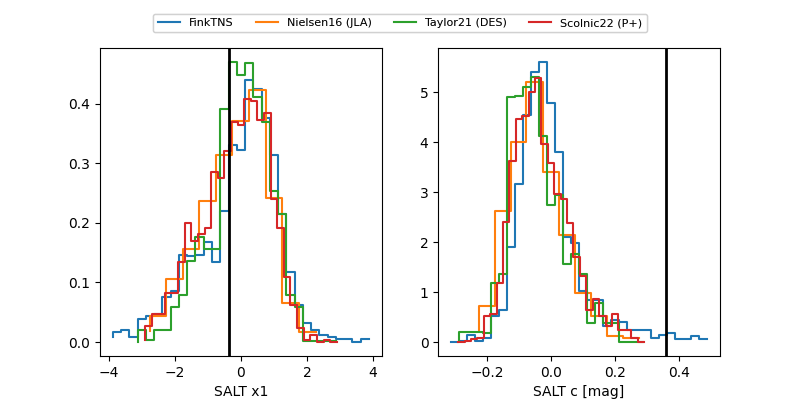

2026hcs
Target 2026hcs at 2026-03-27 04:17
Aliases and brokers:
FINK: link
Lasair: link
ALeRCE: link
TNS: link
YSE: link
alt names
ZTF26aapbamq (ztf,fink_ztf)
2026hcs (tns,yse)
Coordinates:
equatorial (ra, dec) = 120.2536,+14.84900
equatorial (HMS+DMS) = 08:01:00.87,+14:50:56.39
galactic (l, b) = (206.9706,+21.96421)
Flags:
Photometry:
last ztfr=19.55
2 ztfr detections
Lightcurve

Visibility


Additional plots
